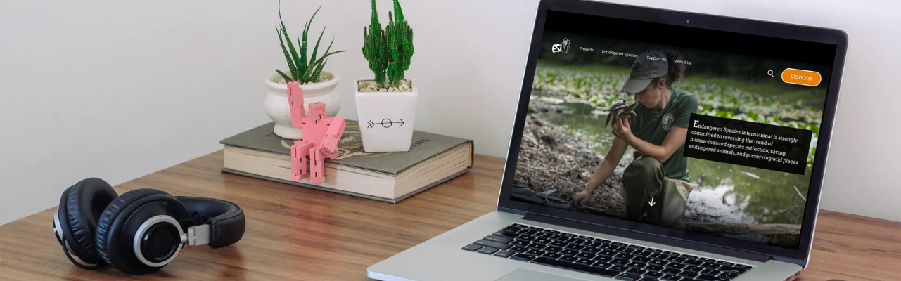
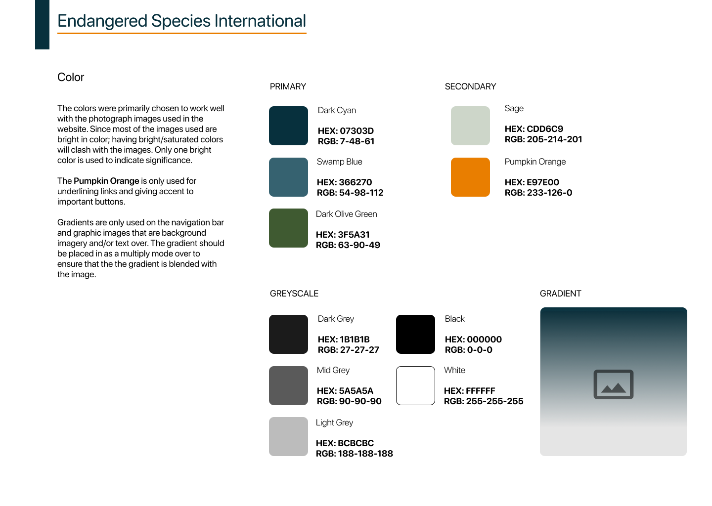

Endangered Species International (ESI) is an NPO on a mission to save
endangered animals, protecting wildlife and their habitats. In this
redesign, I created a new and improved online presence for ESI,
capable of increasing awareness and donor confidence in the important
work that they do.

My Role
I collaborated in a team of three. My role was to conduct research,
analyze data, ideate solutions, create a visual design, wireframe,
and prototype
Duration
Our team had three weeks to meet the deadline. We needed to deliver
a responsive design for web and mobile screens, and present our case
study.
Tools Used
Figma, Trello, Miro, Google, Zoom Meetings
The Challenge
ESI’s current website is in a very outdated layout and is difficult
to scan. The pages are unattractive, uninteresting, and the content
is either not up to date or difficult to search for. Visitors felt
unsure that they could trust the organization and questioned its
legitimacy. Nothing compelled users to take action and make a
donation.
Below are example pages of the current ESI website: outdated,
disorganized, unappealing. The website also has an area of margin on
the right side that has no content at all on nearly every page.
HomePage
Galleries
Mission
Donate
The Solution
As a team, we saw an opportunity to update the website that will
provide updated information and attract users to want to learn more
about the organization and its efforts. To do so, the top goals for
the project were to:
Place emphasis on the Mission Statement
Make the endangered species page more eye-catching and
informative.
Create a unique color scheme and modern visual design
research//
We analyzed the organization’s website in addition to its social media
so that we could get to know ESI. Once we understood as much as we could
find out about ESI and its mission, our team created a google survey to
find potential stakeholders. The survey had basic questions about
demographics, but we mostly focused on questions about animals, the
environment, and any previous experience with donating to similar
causes. We narrowed the results to six people who are passionate about
wildlife and were able to hold interviews with them about the ESI
website.
In a mapping session of user responses, we quickly saw a pattern that
users were unimpressed with the layout of the site, the use of photos
(and overall aesthetic), as well as the navigation. These negative
feelings led most of the participants to question the legitimacy of the
organization.
We then designated a user persona to guide us in our design decisions.
The persona helped us to empathize with ESI’s audience and set the tone
for our priorities in how we were going to capture their attention and
gain their confidence.
define//
Since our persona, Taylor, is very passionate and involved in the
environmental community, he wants to do a lot of research before
determining if the organization is trustworthy and making a donation.
Keeping that in mind, we created a task flow of how Taylor would go
about navigating and researching ESI through its website before taking
any action to support the organization.
Based on what we know about our delegated persona, our team rapidly
brainstormed ideas from his point of view through the “I like, I wish,
What If...” Method. We then placed the ideas into a feature
prioritization matrix, keeping both ESI and the persona’s wants in mind.
We decided to focus the redesign on the starred items, and if we had
time we would tackle the other issues to further improve the user
experience.
Now it’s finally time to put our ideas on paper and wireframe the new
and improved design for ESI. Individually we created simple wireframes
for how we thought the homepage should look. I did wireframe #1, and my
team members did wireframes #2 and #3. We all had great ideas that we
combined into one wireframe. Our teamwork resulted in a great starting
point and gave us direction for how to style the other pages we wanted
to showcase: “Our Mission”, “Endangered Species”, and “Donate”.
Wireframe #1
Wireframe #2
Wireframe #3
Combined Wireframe
We then iterated the lo-fi wireframe into a mid-fi prototype to get a
better feel of how the layout would interact with users visiting the
site. Due to the tight deadline, we decided to divide and conquer. We
individually worked on the wireframing and prototyping for the other
pages that we wanted to showcase, and then we would meet up to make any
revisions together prior to performing usability testing.
I volunteered to tackle the donations page, which felt like it had the
most interaction design because of the donation form and was really fun
to create. One of my shining moments was coming up with the idea to
include ESI’s awards, the Seal of Transparency, and 2020 Top-Rated
Non-Profit, within the donations page. Placing them here made a lot of
sense as it might increase the donor’s confidence in the organization.
My team really liked the idea and I was so happy! Here is a preview of
the final donations page and the flow of the form itself.
prototype-testing//
Once we had our mid-fi desktop wireframes designed, we also created the
correlating mobile screens and prepared both web and mobile prototypes
for usability testing. A total of three participants tested the
prototype.
While we received a lot of good feedback, one of the major issues we
came across was the "Donate" button in the top navigation. A few test
participants noted that the button doesn't stand out and they had to get
to the donations page through the menu items. This was an issue we knew
we had to fix for the most obvious reason: the organization could
potentially miss out on intended donations if users are unable to find
the page. To fix this, we made changes to the button, making it more
prominent.
Our solution was to color the button to differentiate it from other
navigation content, but we weren’t ready to commit to a color. We
decided to do a coloring session and came up with individual ideas. I
wanted to use colors that compliment the professional tone of the
organization and won’t clash with the vibrant images that we were using.
I inserted some colors and finally arrived at color tones that are more
cool tone and muted . Can you guess which colored page was mine? You got
it, the middle one. We voted and discussed what we liked in each example
and ended up going with my colors and another teammates idea to put a
heavy divider between each section. In the example on the right, it’s
the yellow bar across the page.
Even though we liked what we came up with, we did receive some feedback
during the prototyping phase that the website would look fine and would
benefit without additional colors because it may look too distracting.
The feedback was given without seeing the colors we had come up with, so
in our final usability test, we wanted to let the potential users
decide. We did an A/B test on color vs. no color on three participants.
We were delighted that 3/3 liked the color version!
final prototype//
As a result of our final A/B testing, we decided to go with the color
scheme. We then continued to build out the rest of our style guide, and
applied it to the individual pages. This was a smart way for us to keep
consistent with the designs, fonts, and colors and also saved us a lot
of time during our stand-ups and working sessions. We were able to use
our time wisely and focus on other important design decisions.

Next
Introducing ESI - The Redesign:
The Reflection
Because we were limited on time, we were unable to build out
additional pages. To further develop the website, we want to build
out the “Projects” page of the website. It is very important to
the organization to communicate to donors about the latest
projects and work in the field. This would be a space to build
trust through transparency in their work. We also want to update
the staff information page with current members of the
organization so interested users can make contact easily. We also
thought it would be fun to create a page with educational
resources for students to learn more about protecting endangered
species and the environment.
What I learned//
Understand the stakeholders. Empathizing with the organization’s
mission as well as potential donors helped me understand their
goals and fueled my passion to create something that would be
impactful and meaningful.
Insert my creative solutions. I contributed some great ideas
that the team liked. I know it might not always work out that
way, but unspoken ideas will never become real things.
Let the users define the direction of the design. It’s easy to
be biased about what we think works, but if it doesn’t work for
the user then there must be a better design solution to achieve.